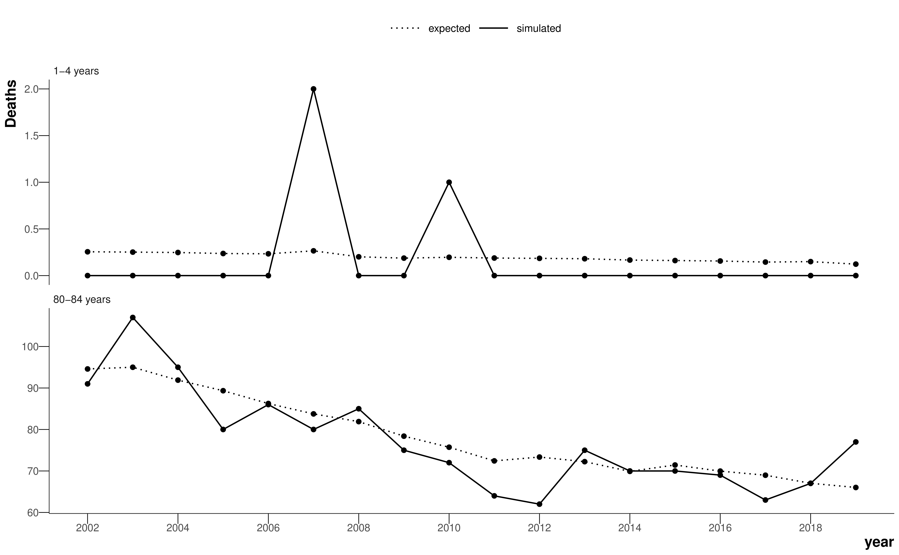

4 Modelling death rates
4.1 Overview
This chapter presents the modelling choices that are common between the proceeding analysis chapters.
4.2 Why we need to smooth death rates
For each chapter, the quantity of interest is the same: mortality in each age group, spatial unit and year. Empirically, death rates can be calculated from observed data as the number of deaths divided by the population in each strata. Formally, using \(a\), \(s\), and \(t\) to index age, spatial unit and time, respectively, we write \[ \hat{m}_{ast} = \frac{\text{deaths}_{ast}}{\text{population}_{ast}}, \tag{4.1}\] where \(\hat{m}_{ast}\) is the empirical death rate.
When the number of deaths becomes small, however, the empirical death rate presents an apparent variability from year to year, or from spatial unit to spatial unit, which is larger than the true differences in the risk of death. The problem is exacerbated for the young ages or causes with lower mortality, where the number of deaths might be zero, or for smaller geographical units, where the population might be very small. As a demonstration, Figure 4.1 shows the expected and simulated number of deaths for a young age group (1-4 years) and an old age group (80-84). The simulation assumes the hypothetical spatial unit has a population of 1000 in each age group in each year, and generates deaths using a Poisson distribution and the national age-specific death rates for each year. Note, given the population sizes in Table 3.1, the true age-specific populations for LSOAs and MSOAs will be smaller and there will be even more zeros and even more noise in the number of deaths than in this simulation. Although there are a large number of deaths in the older age group and it is easy to visualise a curve that fits the data, the death counts for the young age group are extremely sparse and it is difficult to estimate the true underlying death rate. In this thesis, I have used Bayesian hierarchical models to obtain stable estimates of death rates by sharing information across age groups, spatial units, and years. An added advantage of the Bayesian paradigm is the robust estimation of error.

This is a regression task. We want to smooth over the data – the models are not being used for prediction. I tried to design a model that captures as much of the true variation in the data as possible using epidemiological knowledge to choose plausible effects. In other words, the model is “full”, with enough parameters to capture all the true variability. The downside of this approach is that models with more parameters are harder to fit, whereas models with fewer parameters, or parsimonious models, make Bayesian inference easier but can mask some of the variance.
4.3 A model for smoothing death rates
Here, I will present the model for smoothing death rates used for the analysis in Chapter 5. Each chapter thereafter, I will explain how and why the model differs.
I used a Bayesian hierarchical model to obtain stable estimates of death rates by sharing information across age groups, spatial units, and years. I conducted all analyses for women and men separately because mortality and trends differ by sex. In the model, the number of deaths in age group \(a (=1,...,19)\), spatial unit \(s (=1,...,6791)\)1 and year \(t (= 1,...,18)\) follows a negative binomial distribution \[ \text{deaths}_{ast} \sim \text{Negative Binomial}(p_{ast}, r). \tag{4.2}\] The parameter \(p_{ast}\) is \[ p_{ast} = \frac{r}{r + m_{ast} \cdot \text{Population}_{ast}}. \tag{4.3}\] where \(r \geq 0\) is the overdispersion parameter, which accounts for extra variability not captured by other components in the model, and \(m_{ast}\) is the death rate. The negative binomial2 likelihood can be thought of as a generalisation of the Poisson likelihood, which allows for overdispersion, with larger values of \(r\) indicating more similarity to a Poisson distribution. A Poisson distribution is a suitable approximation to the binomial distribution for rare events.
Log-transformed death rates were modelled as a function of time, age group and spatial unit. The model contains terms to capture the overall level and trend over time of mortality, as well as age-specific and space-specific terms to allow deviations from these terms. Specifically, log-transformed death rates are modelled as \[ \log({m_{ast}}) = \alpha_0 + \beta_0 t + \alpha_{1s} + \beta_{1s} t + \alpha_{2a} + \beta_{2a} t + \xi_{as} + \nu_{st} + \gamma_{at}, \tag{4.4}\] where \(\alpha_0\) is the overall intercept across all age groups and spatial units. \(\beta_0\) quantifies the overall trend (over time) across all age groups and spatial units. \(\alpha_{1s}\) and \(\beta_{1s}\) measure deviation from the overall intercept and trend terms, respectively, for each spatial unit. \(\alpha_{2a}\) and \(\beta_{2a}\) measure deviation from the global level and trend, respectively, for each age group. I used first-order random walk priors on \(\alpha_{2a}\) and \(\beta_{2a}\) so that they vary smoothly over adjacent age groups, with the form \(A_a \sim \mathcal{N}(A_{a-1}, \sigma_A^2)\) for both age-specific terms \(\alpha_{2a}\) and \(\beta_{2a}\). I constrained \(\alpha_{21} = 0\) and \(\beta_{21} = 0\) so each random walk was identifiable and centred on the corresponding overall term.
\(\xi_{as}\) is an age group-spatial unit interaction term, which quantifies space-specific deviations from the overall age group structure given by \(\alpha_{2a}\). This allows different spatial units to have different age-specific mortality patterns, and each age group’s death rate to have a different spatial pattern. This interaction term was modelled as \(\mathcal{N}(0, \sigma_\xi^2)\).
\(\nu_{st}\) and \(\gamma_{at}\) allow space- and age group-specific nonlinearity in the time trends. For each spatial unit and age group, I again used first-order random walk priors with \(\nu_{s1} = \gamma_{a1} = 0\) so that the terms were identifiable.
The spatial intercepts and slopes, \(\alpha_{1s}\) and \(\beta_{1s}\), were modelled as nested hierarchical random effects. For the MSOA analysis, MSOAs were nested in districts, which were, in turn, nested in regions. For the LSOA analysis, LSOAs were nested in MSOAs, which were nested in districts. The terms for the largest spatial unit were centred on zero to allow the spatial effects to be identifiable.
All standard deviation parameters of the random effects had \(\sigma \sim \mathcal{U}(0, 2)\) priors. For the global intercept and slope, we used the diffuse prior \(\mathcal{N}(0, \sigma^2=10^5)\). The overdispersion parameter \(r\) had the prior \(\mathcal{U}(0, 50)\).
Table B.1 shows all model parameters, their priors and dimensions for the MSOA-level model in Chapter 5.
4.4 Inference
The decision was made early in my PhD research to use Markov chain Monte Carlo (MCMC) sampling methods for inference, as this is the “gold standard” with guarantees that the sequence of samples will asymptotically converge to the true posterior. Furthermore, the state-of-the-art approximate inference package for spatial models, INLA, scales badly with the number of hyperparameters, and hence would struggle with the high dimensionality of the models in this thesis.
Bayesian models can be specified in a probabilistic programming language. The starting point for this project was the NIMBLE package (de Valpine et al., 2022, 2017). NIMBLE uses the BUGS (“Bayesian inference Using Gibbs Sampling”) syntax for defining a hierarchical model, which my research group has a lot of experience with as WinBUGS, one of the earliest software packages for Bayesian analysis, was developed largely in the department for use on SAHSU studies. NIMBLE has an R interface but compiles models to C++ for speed and scalability. It also increases the sampling efficiency by automatically finding conjugate relationships between parameters in the model and marginalising over them wherever possible. The group also has a close relationship with the lead developer of NIMBLE.
Nevertheless, Bayesian inference is difficult to scale, and some of the models in this thesis had in excess of \(10^6\) parameters and took NIMBLE between 10 and 14 days to collect enough posterior samples. One of the main issues with NIMBLE was that the vast majority of the parameters in the model could not exploit efficient conjugate samplers, and instead used variants of basic Metropolis-Hastings samplers, which, despite numerous efforts at tuning, were inefficient. Although NIMBLE could execute a reasonable number of samples per second, the MCMC chains were struggling to explore the posterior efficiently so the effective sample size per second was low. This is a common problem in spatial and spatiotemporal models, where the parameters are correlated by design. To overcome these mixing issues, the chains had to be run for longer and thinned (i.e. take every \(n^{\text{th}}\) sample so the Markov chain samples are closer to independent, which is better for computational reasons than storing a large number of correlated samples).
I tried different probabilistic programming languages across R, python and Julia (Rashid, 2022), in particular packages that implemented the more efficient No U-Turn Sampler (NUTS) (Hoffman and Gelman, 2014). In the end, I settled on NumPyro (Phan et al., 2019) because it was the fastest and inference could be performed on a GPU, rather than CPUs, which is more performant for large models (Lao et al., 2020). The major downside was that NumPyro had not been used extensively by the spatial modelling community so I had to implement the CAR distribution from Equation 2.2 myself, which has since been contributed to the source code (NumPyro documentation, 2023). Rewriting the model in NumPyro and sampling on a GPU cut the runtime down to around a day. NumPyro also has built-in methods for approximate variational inference, such as the Laplace approximation, but these failed to converge to sensible values for these models without heavy customisation of variational function, so I stuck with sampling methods.
4.5 Clean code and open source
I have paid a lot of attention to open sourcing code for all analyses during my PhD. The code is clean, version-controlled and follows best practices for scientific software engineering. As well as code contributed to open source projects along the way, the code for statistical models, plots and analysis, and the thesis itself can be found on GitHub.
The dimension of \(s\) is different for LSOA- and district-level analysis. In the MSOA-level analysis, there are 6791 spatial units.↩︎
The name “negative binomial” is quite difficult to understand in this context. A better, but less popular name, is the gamma-Poisson distribution. Here, the story is simpler: we have a mixture of Poisson distributions where the rate parameters of the Poisson distributions follow a gamma distribution (McElreath, 2020).↩︎